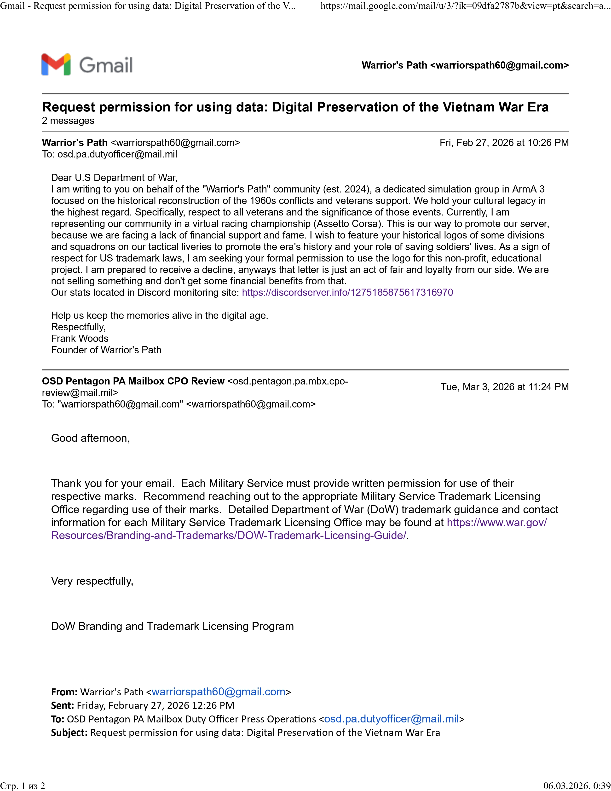

Warrior's Path (est. 2024) — это бесплатное тактическое сообщество в Arma 3, посвященное детальной цифровой реконструкции конфликтов 1960-х годов.
Мы фокусируемся на сохранении памяти о людях и исторической точности событий той эпохи. Любой может присоединиться и помочь, а также поучаствовать в захватывающих сражениях в масштабах игры. Никакого доната, платных DLC и высокомерия администрации.
Мы получили официальные инструкции от Branding and Trademark Licensing Program Министерства обороны США. Наш проект носит некоммерческий и образовательный характер.
